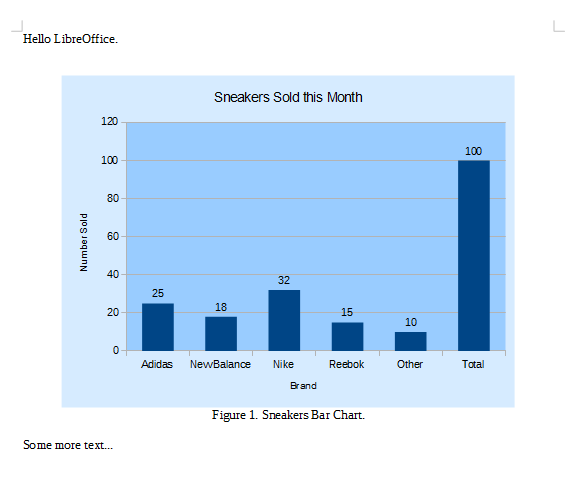
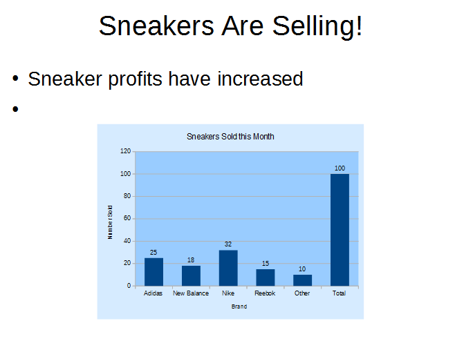

Chapter 33. Using Charts in Other Documents
Topics
Copy-and-Paste Dispatches; Adding a Chart to a Text Document; Adding a Chart to a Slide Document; Saving the Chart as an Image
Example folders: "Chart2 Tests" and "Utils"
This chapter describes two examples, TextChart.java and SlideChart.java, which illustrate a copy-and-paste approach to adding charts to text and slide documents.
SlideChart.java also shows how to save a chart as an image file.
There are three tricky aspects to coding with the clipboard.
1. Clipboard manipulation requires the use of UNO dispatch commands (namely
".uno:Copy" and ".uno:Paste"). The function that sends out a dispatch command returns immediately, but Office may take a few milliseconds to process the request.
This often introduces a timing issue because the next step in the program should be delayed in order to give the dispatch time to be processed.
2. Another timing problem is that dispatch commands assume that the Office
application window is visible and active. Office can be made the focus of the OS, but the few milliseconds between achieving this and sending the dispatch may be enough for another OS process to pull the focus away from Office. The dispatch will then arrive at the wrong process, with unpredictable results.
3. Clipboard programming usually involves two documents. In this case, the
spreadsheet that generates the chart, and the text or slide document that receives the image. One of the limitations of my support classes is that many methods assume only one document is open at a time. To be safe, the program should close the spreadsheet before the text or slide document is opened or created.
Bearing all these issues in mind, is there a better approach for placing a chart in a non- spreadsheet document? The answer should be OLE (Object Linking and Embedding), which is Windows' solution to this very problem. Unfortunately, I was unable to get this mechanism to work via the API; the best I achieved was the creation of an empty chart in a text document, without any data. Looking back through old forum posts, it appears that OLE didn't work in the old chart module either.
I'll look again at clipboard programming in Chapter 43, when I consider using Java's copy-and-paste API, and describe more general examples using Writer, Calc, Impress, and Base documents.
1. Adding a Chart to a Text Document
TextChart.java generates a column chart using the "Sneakers Sold this Month" table from chartsData.ods, copies it to the clipboard, and closes the spreadsheet. Then a text document is created, and the chart image is pasted into it, resulting in the page shown in Figure 1.

Figure 1. Text Document with a Chart Image.
TextChart.java relies on my Write support class from Part 2. The "Hello LibreOffice." paragraph is written into a new document, then the chart is pasted in from the clipboard, a paragraph ("Figure 1. Sneakers Bar Chart") added as a figure legend, and another paragraph ("Some more text…") added at the end for good measure. The document is saved to "hello.odt" and the program ends.
main() is:
// in TextChart.java public static void main(String[] args) { XComponentLoader loader = Lo.loadOffice(); boolean hasChart = makeColChart(loader, "chartsData.ods");
XTextDocument doc = Write.createDoc(loader); if (doc == null) { System.out.println("Writer doc creation failed"); Lo.closeOffice(); return; } GUI.setVisible(doc, true); // to make the doc visible
XTextCursor cursor = Write.getCursor(doc);
cursor.gotoEnd(false);
// make sure at end of doc before appending
Write.appendPara(cursor, "Hello LibreOffice.\n");
if (hasChart) {
Lo.delay(1000);
Lo.dispatchCmd("Paste");
}
// add chart legend
Write.appendPara(cursor, "Figure 1. Sneakers Column Chart.\n");
Write.stylePrevParagraph(cursor, "ParaAdjust",
com.sun.star.style.ParagraphAdjust.CENTER);
Write.appendPara(cursor, "Some more text...\n"); Lo.saveDoc(doc, "hello.odt");
Lo.waitEnter(); Lo.closeDoc(doc); Lo.closeOffice(); } // end of main()
It's important that the text document is visible and in focus, so GUI.setVisible() is called after the document's creation. There's also a call to Lo.delay() before the paste (Lo.dispatchCmd("Paste")) to ensure that earlier text writes have time to finish.
1.1. Making the Chart
TextChart.java uses makeColChart() to generate a chart from a spreadsheet:
// in TextChart.java
private static boolean makeColChart(XComponentLoader loader,
String fnm)
// draw a column chart; uses "Sneakers Sold this Month" table
// this method appears in TextChart.java and SlideChart.java
{
XSpreadsheetDocument ssdoc = Calc.openDoc(fnm, loader);
if (ssdoc == null) {
System.out.println("Could not open " + fnm);
return false;
}
GUI.setVisible(ssdoc, true); // or selection not copied
XSpreadsheet sheet = Calc.getSheet(ssdoc, 0);
CellRangeAddress rangeAddr = Calc.getAddress(sheet, "A2:B8");
XChartDocument chartDoc =
Chart2.insertChart(sheet, rangeAddr, "C3",15,11,"Column");
Chart2.setTitle(chartDoc, Calc.getString(sheet, "A1")); Chart2.setXAxisTitle(chartDoc, Calc.getString(sheet, "A2")); Chart2.setYAxisTitle(chartDoc, Calc.getString(sheet, "B2")); Chart2.rotateYAxisTitle(chartDoc, 90);
Lo.delay(1000); Chart2.copyChart(ssdoc, sheet); Lo.closeDoc(ssdoc); return true; } // end of makeColChart()
makeColChart() uses the table from chartsData.ods shown in Figure 2 to generate the chart in Figure 1.

Figure 2. The "Sneakers Sold this Month" Table.
The only new feature in makeColChart() is the call to Chart2.copyChart() which copies the chart to the clipboard.
Two easy to overlook parts of makeColChart() are the call to GUI.setVisible(), which makes the spreadsheet and chart visible and active, and the call to Lo.delay() before Chart2.copyChart(). This ensures that there's enough time for the graph to be drawn before the ".uno:Copy" dispatch.
Also note that the spreadsheet is closed before makeColChart() returns. This stops the subsequent creation of the text document back in main() from being possibly affected by an open spreadsheet
1.2. Copying a Chart
Chart2.copyChart() obtains a reference to the chart as an XShape, which makes it possible to select it with an XSelectionSupplier. This selection is used automatically as the data for the ".uno:Copy" dispatch. copyChart() is:
// in the Chart2 class
public static void copyChart(XSpreadsheetDocument ssdoc,
XSpreadsheet sheet)
{ XShape chartShape = getChartShape(sheet);
XComponent doc = Lo.qi(XComponent.class, ssdoc);
XSelectionSupplier supplier = GUI.getSelectionSupplier(doc);
supplier.select((Object)chartShape);
Lo.dispatchCmd("Copy");
} // end of copyChart()
Every spreadsheet is also a draw page, so the Spreadsheet service has an XDrawPageSupplier interface, and its getDrawPage() method returns an XDrawPage reference. For example:
// part of Chart2.getChartShape(); see below...
XDrawPageSupplier pageSupplier =
Lo.qi(XDrawPageSupplier.class, sheet);
XDrawPage drawPage = pageSupplier.getDrawPage();
The shapes in a draw page can be accessed by index. Also each shape has a "CLSID" property which can be used to identify 'special' shapes representing math formulae or charts. The search for a chart shape is coded as:
// part of Chart2.getChartShape(); see below...
XShape shape = null;
String classID;
int numShapes = drawPage.getCount();
for (int i=0; i < numShapes; i++) { // loop through shapes
try {
shape = Lo.qi(XShape.class, drawPage.getByIndex(i));
classID = (String) Props.getProperty(shape, "CLSID");
if (classID.toLowerCase().equals(Lo.CHART_CLSID))
// check if shape's class ID is for a chart
break;
}
catch(Exception e) {}
}
These two pieces of code are combined in Chart2.getChartShape():
// in the Chart2 class
public static XShape getChartShape(XSpreadsheet sheet)
{
XDrawPageSupplier pageSupplier =
Lo.qi(XDrawPageSupplier.class, sheet);
XDrawPage drawPage = pageSupplier.getDrawPage();
XShape shape = null;
String classID;
int numShapes = drawPage.getCount();
for (int i=0; i < numShapes; i++) {
try {
shape = Lo.qi(XShape.class, drawPage.getByIndex(i));
classID = (String) Props.getProperty(shape, "CLSID");
if (classID.toLowerCase().equals(Lo.CHART_CLSID))
break;
}
catch(Exception e) {}
}
return shape;
} // end of getChartShape()
2. Adding a Chart to a Slide Document
SlideChart.java generates the same column chart as TableChart.java, using almost the same version of makeColChart(). After the chart has been copied to the clipboard and the spreadsheet closed, a slide document is created and the chart pasted onto the first slide. The chart appears in the center of the slide by default, but is moved down to make room for some text. The end result is shown in Figure 3.

Figure 3. Slide Document with a Chart Shape.
The main() function of SlideChart.java is:
// in SlideChart.java public static void main (String args[]) { XComponentLoader loader = Lo.loadOffice();
boolean hasChart = makeColChart(loader, "chartsData.ods");
XComponent doc = Draw.createImpressDoc(loader); if (doc == null) { System.out.println("Draw doc creation failed"); Lo.closeOffice(); return; } GUI.setVisible(doc, true);
XDrawPage currSlide = Draw.getSlide(doc, 0);
XText body = Draw.bulletsSlide(currSlide,
"Sneakers Are Selling!");
Draw.addBullet(body, 0, "Sneaker profits have increased");
if (hasChart) {
Lo.delay(1000);
Lo.dispatchCmd("Paste");
}
// find and move picture
XShape oleShape =
Draw.findShapeByType(currSlide,
"com.sun.star.drawing.OLE2Shape");
if (oleShape != null) {
Size slideSize = Draw.getSlideSize(currSlide);
Size shapeSize = Draw.getSize(oleShape);
Point shapePos = Draw.getPosition(oleShape);
int y = slideSize.Height - shapeSize.Height - 20;
Draw.setPosition(oleShape, shapePos.X, y); // move pic down
}
Lo.saveDoc(doc, "makeslide.odp"); Lo.waitEnter(); Lo.closeDoc(doc); Lo.closeOffice(); } // end of main()
The chart is pasted into the slide as an OLE2Shape object, which allows it to be found by Draw.findShapeByType(). The shape is moved down the slide by calculating a new (x, y) coordinate for its top-left corner, and calling Draw.setPosition().
3. Saving the Chart as an Image
The only change to makeColChart() in SlideChart.java is the addition of the line:
// in makeColChart() in SlideChart.java Images.saveImage( Chart2.getChartImage(sheet), "chartImage.png");
This saves the chart as a PNG image, which can be loaded by other applications.
Images.saveImage() accepts a BufferedImage argument and filename:
// in Images class
public static void saveImage(BufferedImage im, String fnm)
{
try {
System.out.println("Saving image to " + fnm);
ImageIO.write(im, "png", new File(fnm));
}
catch (java.io.IOException e) {
System.out.println("Could not save image to " + fnm +": "+ e);
}
} // end of saveImage()
Chart2.getChartImage() finds the chart in the spreadsheet and returns it as a BufferedImage object.
// in the Chart2 class
public static BufferedImage getChartImage(XSpreadsheet sheet)
{
XShape chartShape = Chart2.getChartShape(sheet);
if (chartShape == null) {
System.out.println("Could not find a chart");
return null;
}
XGraphic graphic = Lo.qi( XGraphic.class,
Props.getProperty(chartShape, "Graphic") );
if (graphic == null) {
System.out.println("No chart graphic found");
return null;
}
String tempFnm = FileIO.createTempFile("png"); if (tempFnm == null) { System.out.println("Could not create a temp file for graphic"); return null; }
Images.saveGraphic(graphic, tempFnm, "png"); BufferedImage im = Images.loadImage(tempFnm); FileIO.deleteFile(tempFnm); return im; } // end of getChartImage()
Chart2.getChartImage() finds the chart in the sheet by using Chart2.getChartShape() described earlier. The shape is cast to an Office graphics object, of type XGraphic.
getChartImage() then creates a temporary file to store the XGraphic image, which is immediately re-loaded as a BufferedImage. This is a bit nasty, but the only way I've found to convert XGraphic to BufferedImage.